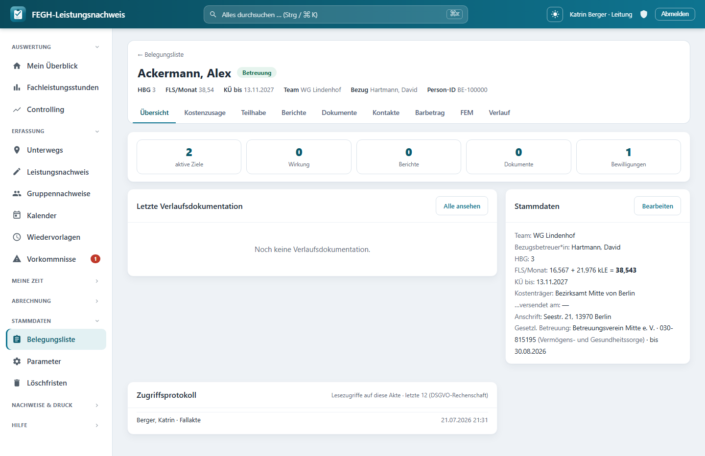

Fallakte & Belegungsliste¶

Fallakte: alles zur Person unter Reitern (Übersicht · Kostenzusage · Teilhabe · Berichte · Dokumente · Verlauf).
Die Fallakte ist die zentrale Detailseite je Klientin: von hier aus erreichst du alles zu einer Person – Kennzahlen, Kostenzusage, Teilhabeziele, Berichte, Dokumente und den Verlauf – über eine einheitliche Reiter-Leiste. Der Einstieg in die Fallakte läuft über die Belegungsliste: eine schlanke Tabelle aller Klientinnen deiner Team(s), aus der du mit „Öffnen ›“ in die jeweilige Akte springst. Diese Seite erklärt beide Ansichten und wie sie zusammenspielen.
Wer sieht welche Klient*innen?
Beide Ansichten sind team-gescopt: Du siehst die Klientinnen deines eigenen bzw. der von dir geleiteten Team(s). Innerhalb des Teams sieht jeder alle (Vertretungsregelung). Admin- und Verwaltungs-Konten haben aus Datenschutzgründen keinen Klientenzugriff und sehen weder Fallakte noch Belegungsliste.
Die Belegungsliste¶
Die Belegungsliste (Menü → Belegungsliste) ist die Übersicht der Leitung über alle Klient*innen der geleiteten Team(s), sortiert nach Nachname. Sie ersetzt die früheren Django-Admin-Seiten und dient dem schnellen Pflegen der Stammdaten sowie dem Einstieg in die Fallakte.
Über der Tabelle liegen drei Aktions-Buttons:
| Button | Funktion |
|---|---|
| + Klient*in anlegen | Legt einen neuen Klientin an (Nachname, Team und Bezugsbetreuerin sind Pflicht). |
| Kostenträger verwalten | Öffnet die Kostenträger-Liste (Bezirksämter usw.). |
| Angebote & Belegung | Wohnformen/WGs/Gruppen mit Plätzen und Anwesenheitskalender. |
Die Tabelle selbst zeigt je Zeile:
| Spalte | Inhalt |
|---|---|
| Klient*in | Name (Link in die Fallakte) plus die Status-Badges (siehe unten) |
| Team | zugeordnetes Team |
| Bezugsbetreuer*in | zuständige Fachkraft |
| AL / kLE / FLS/Monat | bewilligte Fachleistungsstunden: Assistenzleistung + kalkulatorische Leistungseinheit = Gesamt/Monat |
| HBG | Hilfebedarfsgruppe |
| KÜ bis | Ende der Kostenübernahme |
| …versendet am | Datum der Berichts-Versendung |
| Status | Betreuung oder Beendigung |
| (letzte Spalte) | Button „Öffnen ›“ in die Fallakte |
Zwei Wege in die Fallakte
Sowohl der Name in der ersten Spalte als auch der Button „Öffnen ›“ am Zeilenende führen auf denselben Übersichts-Reiter der Fallakte.
Noch keinem Team zugeordnet?
Bist du noch keinem Team zugeordnet, bleibt die Liste leer und „+ Klient*in anlegen“ ist ausgegraut – es steht kein Team zur Auswahl. Die Administration ordnet dich unter Administration → Mitarbeiter-Verwaltung → Bearbeiten als Leitung einem Team zu („leitet Team(s)“).
Status-Badges (Ampel neben dem Namen)¶
Direkt neben dem Namen erscheinen kleine farbige Badges, die auf Handlungsbedarf hinweisen. Sie werden nur für laufende Betreuungen (Status Betreuung) berechnet – bei Beendigung bleibt die Zeile badge-frei. Es gibt genau diese vier:
| Badge | Farbe | Bedeutung |
|---|---|---|
| keine Bewilligung | rot | Es gibt keine aktive Bewilligung – die rechtssichere Kostenzusage für die Abrechnung fehlt. |
| Bewilligung abgelaufen | rot | Die aktive Bewilligung ist über ihr Gültig-bis hinaus. |
| Bewilligung endet in N T | gelb | Die Bewilligung läuft in 70 Tagen oder weniger aus (N = Resttage). |
| Bericht fällig | gelb | Der Entwicklungsbericht steht an (10 Wochen vor KÜ-Ende). |
Warum 70 Tage / 10 Wochen?
Der Vorlauf gibt der Leitung Zeit, die Fortschreibung der Kostenzusage bzw. den Entwicklungsbericht rechtzeitig auf den Weg zu bringen, bevor die Frist verstreicht. Dieselben Badges tauchen auch oben in der Fallakte auf.
Die Fallakte¶
Klickst du auf einen Klientin, öffnet sich die Fallakte. Kopf und Reiter-Leiste sind auf allen Unterseiten identisch, sodass du dich immer gleich zurechtfindest.
Der Kopf¶
Ganz oben steht ein Zurück-Link (← Belegungsliste für die Leitung, sonst ← Mein Überblick), darunter der Name mit einem Status-Chip:
- Betreuung (grün) bzw. Beendigung (grau) je nach Status.
- anonymisiert – falls der Datensatz DSGVO-anonymisiert wurde.
Die Kopf-Metazeile fasst die wichtigsten Eckdaten kompakt zusammen: HBG, FLS/Monat, KÜ bis, Team, Bezug (Bezugsbetreuerin) und – falls gepflegt – die Person-ID*.
Die Reiter¶
| Reiter | Inhalt | Sichtbar für |
|---|---|---|
| Übersicht | Kennzahlen, Fälligkeiten, letzte Verlaufsdoku, Stammdaten | alle |
| Kostenzusage | Bewilligungen (Kostenträger, Aktenzeichen, Gültigkeit, HBG/FLS) verwalten | nur Leitung |
| Teilhabe | Teilhabeziele und Wirkungseinschätzungen | alle |
| Berichte | Entwicklungs-/Teilhabeberichte | alle |
| Dokumente | hinterlegte Dokumente/Anlagen | alle |
| Verlauf | chronologische Verlaufsdokumentation (read-only) | alle |
Kostenzusage nur für die Leitung
Der Reiter Kostenzusage (Bewilligungen) erscheint nur für die Leitung. Betreuer*innen sehen die Eckdaten der aktiven Bewilligung indirekt im Kopf und in den Stammdaten der Übersicht, pflegen sie aber nicht.
Reiter „Übersicht“¶
Der Einstiegs-Reiter fasst den Fall auf einen Blick zusammen:
- Aufmerksamkeits-Badges ganz oben – dieselben wie in der Belegungsliste (keine/auslaufende/abgelaufene Bewilligung, Bericht fällig).
- Eine Reihe Kennzahlen-Kacheln (jeweils verlinkt auf den passenden Bereich): aktive Ziele, Wirkung, Berichte, Dokumente und – nur für die Leitung – Bewilligungen.
- Panel „Letzte Verlaufsdokumentation“: die letzten fünf dokumentierten Leistungen mit Datum, Leistungsart, ggf. Tätigkeit und Betreuerin-Kürzel; Button „Alle ansehen“* springt in den Verlaufs-Reiter.
- Panel „Stammdaten“: Team, Bezugsbetreuerin, HBG, FLS/Monat (AL + kLE = Gesamt), KÜ bis, Kostenträger und Versand-Datum. Für die Leitung gibt es hier einen „Bearbeiten“*-Button.
Reiter „Verlauf“¶
Der Verlaufs-Reiter zeigt die komplette Verlaufsdokumentation als Zeitleiste, absteigend nach Datum. Angezeigt werden nur dokumentierte Leistungen – Zeilen ohne Doku-Text erscheinen hier nicht. Je Eintrag stehen Datum, Uhrzeit (falls erfasst), Leistungsart, ggf. Tätigkeit, Betreuerin und der volle Doku-Text; verknüpfte Zielbezüge* werden als kleine Chips mit ausgewiesen.
Read-only
Der Verlauf ist reine Ansicht. Geschrieben und geändert werden die Doku-Texte an der Leistung selbst – siehe Dokumentation (Verlaufstexte).
Datenschutz-Hinweise¶
Besonders schützenswerte Daten (Art. 9 DSGVO)
Fallakte und Verlauf enthalten Gesundheits- und Sozialdaten. Der Zugriff ist konsequent team-gescopt; Admin und Verwaltung sind bewusst ausgeschlossen. Halte dich beim Formulieren der Verlaufsdoku an die Datensparsamkeit – nur das fachlich Erforderliche, keine überschießenden Details.
Interne Doku ≠ Kostenträger-Nachweis
Die Verlaufsdokumentation ist interne Fachdoku und erscheint nicht auf dem amtlichen Fachleistungs-Druck, der an den Kostenträger geht. Für den Kostenträger zählen nur die abrechnungsrelevanten Leistungsdaten.
Für Neugierige: Technik dahinter¶
Nur zur Nachvollziehbarkeit
Dieser Abschnitt richtet sich an alle, die verstehen (oder nachbauen) möchten, wie die Seiten technisch aufgebaut sind. Für die tägliche Bedienung ist er nicht nötig.
- Belegungsliste-View:
nachweis/views_stammdaten.py→belegungsliste– lädtservices.klienten_fuer(request.user)(team-gescopt),select_related("team", "bezugsbetreuer"),prefetch_related("bewilligungen"), hängt je Klient*ink.hinweise = services.klient_hinweise(k, heute)an und meldetkein_teamüberservices.teams_fuer. - Fallakte-Views:
nachweis/views_fallakte.py→klient_detail(Übersichts-Reiter mithinweise,zaehler,letzte_doku,aktive_bewilligung) undklient_verlauf(dokumentierte Leistungen viaexclude(dokumentation=""),prefetch_related("ziele"), read-only). Beide holen die Person mitget_object_or_404(services.klienten_fuer(request.user), pk=pk). - Status-Badges:
nachweis/services.py→klient_hinweise(klient, stichtag)– nur beiStatus.BETREUUNG; erzeugtkeine Bewilligung/Bewilligung abgelaufen(art="bad"),Bewilligung endet in N Tbeitage <= 70(art="warn") undBericht fälligbeiklient.bericht_offen(stichtag). Verwandt:bewilligung_fristen(Vorlauf 70 Tage) undberichte_faellig. - Gemeinsamer Kopf + Reiter:
nachweis/templates/nachweis/_fallakte_kopf.html– Parameterfa_tab(uebersicht|kostenzusage|teilhabe|berichte|dokumente|verlauf); der Reiter Kostenzusage und der Zurück-Link hängen am globalennav_ist_leitung. Reiter verlinken aufnachweis:klient_detail,nachweis:bewilligungen,nachweis:ziele,nachweis:berichte,nachweis:dokumente,nachweis:klient_verlauf. - Templates:
nachweis/templates/nachweis/belegungsliste.html(Tabelle,.bl-badge, „Öffnen ›“),klient_detail.html(KPI-Kacheln, Panels „Letzte Verlaufsdokumentation“/„Stammdaten“) undklient_verlauf.html(Zeitleiste.vl, Zielbezug-Chips). - Scoping/Rollen:
services.klienten_fuer/services.teams_fuerinnachweis/services.py– Admin und Verwaltung (ist_admin/ist_verwaltung) erhaltenKlient.objects.none(); die Belegungsliste ist zusätzlich perservices.ist_leitungauf die Leitung beschränkt. - Model-Bezüge:
Klientmitaktive_bewilligung(),bericht_offen(),fls_gesamt,al/kle,hbg,kue_bis,status(Status.BETREUUNG/Beendigung),anonymisiert_am,person_id; Reiter-Daten aus den Relationenziele(ZielStatus.AKTIV),berichte,dokumente,wirkungseinschaetzungen,bewilligungenundleistungen.